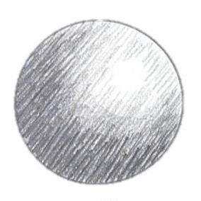
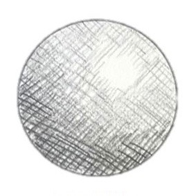
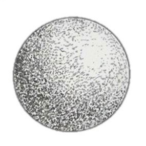
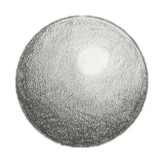

This site provides fundamental information about one of the most common drawing mediums: graphite. Although drawing with pencils may seem extremely easy and self-explanatory, it is a more nuanced art form than most people give it credit for. That’s why I decided to provide a brief summary on some of the "graphite basics”: the graphite scale, common shading techniques, as well as some tips and tricks-of-the-trade that I’ve learned over the years.
◊
❊
◊
When diving into the world of graphite, one of the first challenges people encounter is the ambiguous hierarchy of pencils. Often times, when buying pencils for the first time, the selection of pencils can be ridiculous and overwhelming. In addition to a variety of brands, there are different types of pencils each with their own letter or combination of letters and/or numbers somewhere on the shaft of the pencil (typically near the eraser end of it).
Here’s the breakdown: The letters are either “H” or “B” with the numbers ranging anywhere from 2 to 9. This number and letter combo indicates where that pencil falls on the graphite scale. A pencil’s location on the graphite scale tells you about it’s value capacity (that is, how light or dark of a value it will create). A pencil’s value capacity is determined by how hard or soft the graphite is. Harder graphite, represented by “H” on the graphite scale, produces lighter values. Likewise, softer graphite, represented by “B” on the graphite scale, creates darker values. The numbers accompanying these letters indicate the graphite’s degree of hardness or softness (and therefore it’s lightness or darkness). The higher the number, the harder or softer the graphite is, with HB in the middle (sometimes referred to as “F”, HB is actually just your standard #2 school pencil).
◊
❊
◊
Shading with graphite is a fairly straight forward concept, however, I found that having a general understanding of basic shading techniques drastically influenced the styles and textures that I was able to achieve with graphite.The table below provides a quick over-view of 4 fundemental shading techniques.
| TECHNIQUES | HOW IT WORKS | EXAMPLE |
| Hatching | This shading method uses parallel lines to shade a drawing The closer together the lines are, the darker that area will become. |  |
| Crosshatching | This technique uses perpendicular lines to shade a drawing. (Think of it as the cousin of hatching!Only,instead of using lines that go in one direction, you use lines that go in opposing directions, causing them to cross!) The closer together the intersecting lines, the darker an area becomes. |  |
| Stippling | This method uses numerous, small dots to shade a drawing. The higher the concentration of dots in an area, the darker that area will be. |  |
| Stumping | This shading technique uses blending stumps (hence the name "stumping") to smooth the appearance of applied graphite. (click here for more info about blending stumps!) |  |
If you want to learn more techniques OR are curious to see how some of these techniques are used, click here for more information!
◊
❊
◊
» DOs «
» DON'Ts «